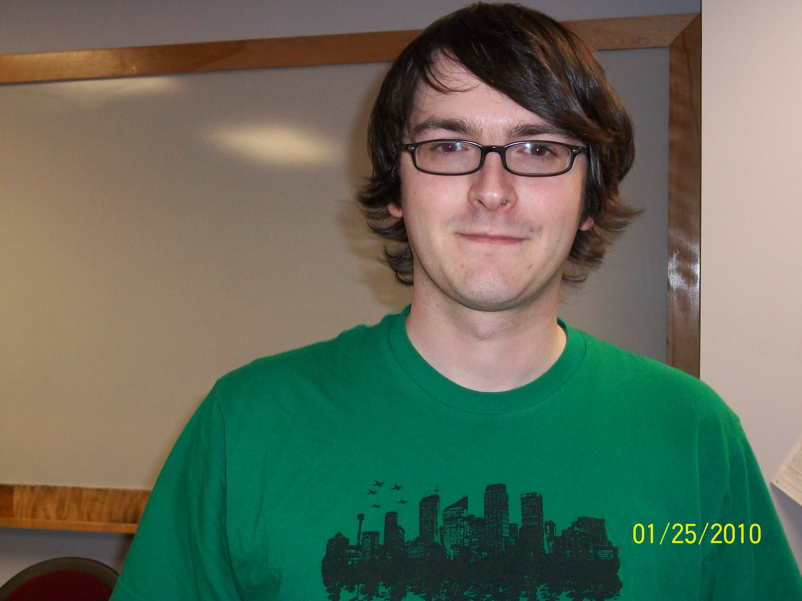
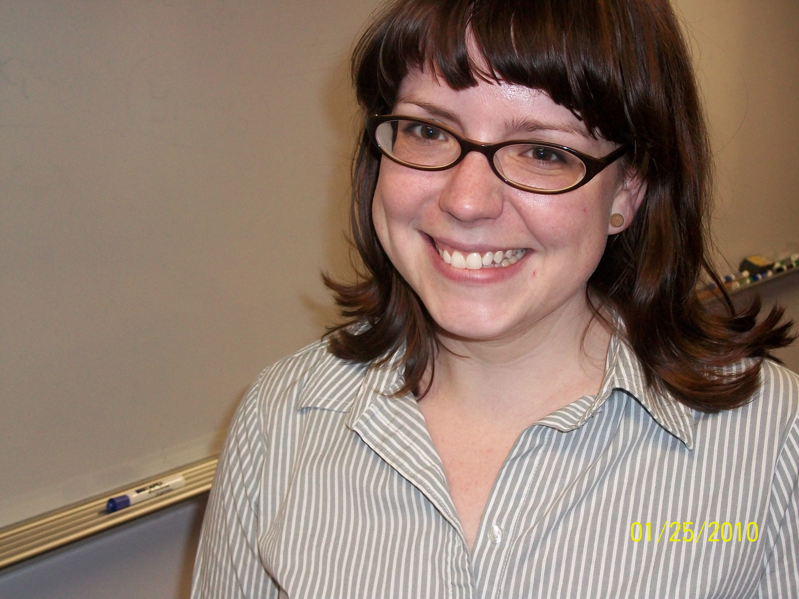

Next Event
On October 13th from 11:30-12:45pm, Dr.
Rob Clewley will present a talk entitled "Lies, True Lies, and Bioinformatics" in room 124
of the Petit Science Center.. As always, we'll have pizza and drinks!
Presented in conjunction with the Neuroscience Graduate Student
Association. Also, check out our calendar of upcoming events for the
fall semester.
Smile of the day:
A math student is pestered by a classmate who wants to copy his homework assignment. The student hesitates, not only because he thinks it's wrong, but also because he doesn't want to be sanctioned for aiding and abetting.
His classmate calms him down: "Nobody will be able to trace my homework to you: I'll be changing the names of all the constants and variables: a to b, x to y, and so on."
Not quite convinced, but eager to be left alone, the student hands his completed assignment to the classmate for copying.
After the deadline, the student asks: "Did you really change the names of all the variables?"
"Sure!" the classmate replies. "When you called a function f, I called it g; when you called a variable x, I renamed it to y; and when you were writing about the log of x+1, I called it the timber of x+1..."
About the Math Club...
The Mathematics and Statistics Club of Georgia State University was formed in 2005 to provide a community for students interested in math and stats at GSU. We hold events approximately once a month, and all are welcome to attend.
Officers
David Smith
President

David Smith is a mathematics major currently somewhere between his junior and senior years. Originally from Scotland, he has now lived in the US for almost three years. When not in class or working in the MILE, he occasionally enjoys playing piano or watching real football (otherwise known as soccer).
|
Andy Lightcap
Vice President

Andy graduated from Kennesaw State University in Summer 2008 with B.S. in
Mathematics. He lived in Suriname, South America for the academic year
08-09 teaching high school math at an international school with his
wife. Their first daughter was born there weeks before they came home. He
is currently interested in graph theory and combinatorics, has 1
collaborative paper published in mathematics Magazine Dec, 2009 with
another collaborative paper due in ARS Combinatorica sometime in the
middle of the decade. He is working on his masters degree and hope to
continue to earn his Ph.D. in Mathematics.
|
Ahmed Resan
Secretary

Ahmed Resan was born and grew up in Bangladesh. He moved to USA in 2006 and obtained his high school diploma in 2008. He am currently majoring in Biology and minoring in Chemistry, as a sophomore. He has been with GSU math club since spring 2009."
|
Sara Malec
Treasurer

Sara Malec is a Ph.D. student studying Commutative Algebra and Algebraic Geometry. After receiving her B.S. in math from University of Wisconsin - Madison, she taught 8th grade math for two years in Atlanta Public Schools with Teach for America before earning her M.S. from GSU.
|
India Jackson
Webmaster

India Jackson is an undergraduate math major working towards acceptance in a graduate program. She is a volunteer tutor in the Math Lab and MILE at GSU and a paid tutor at Georgia Perimeter College. She is doing undergraduate research in the field of mathematics education. Most importantly she is the mother of a two year old who keeps her going strong.
|